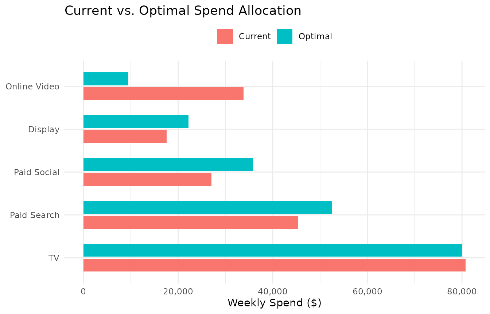
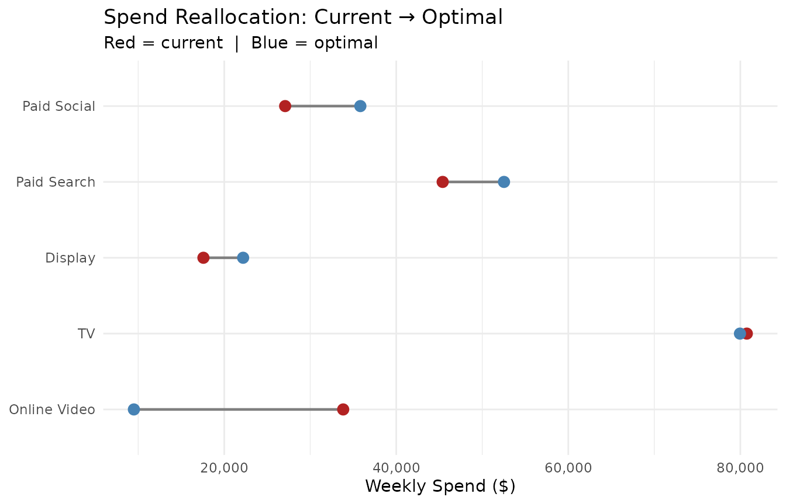
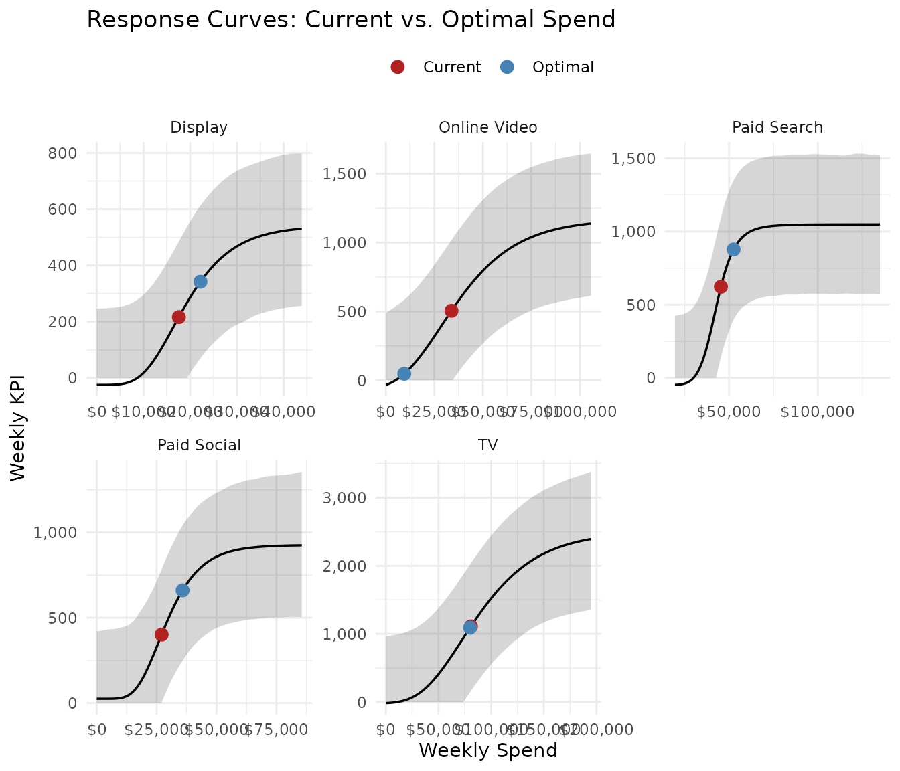
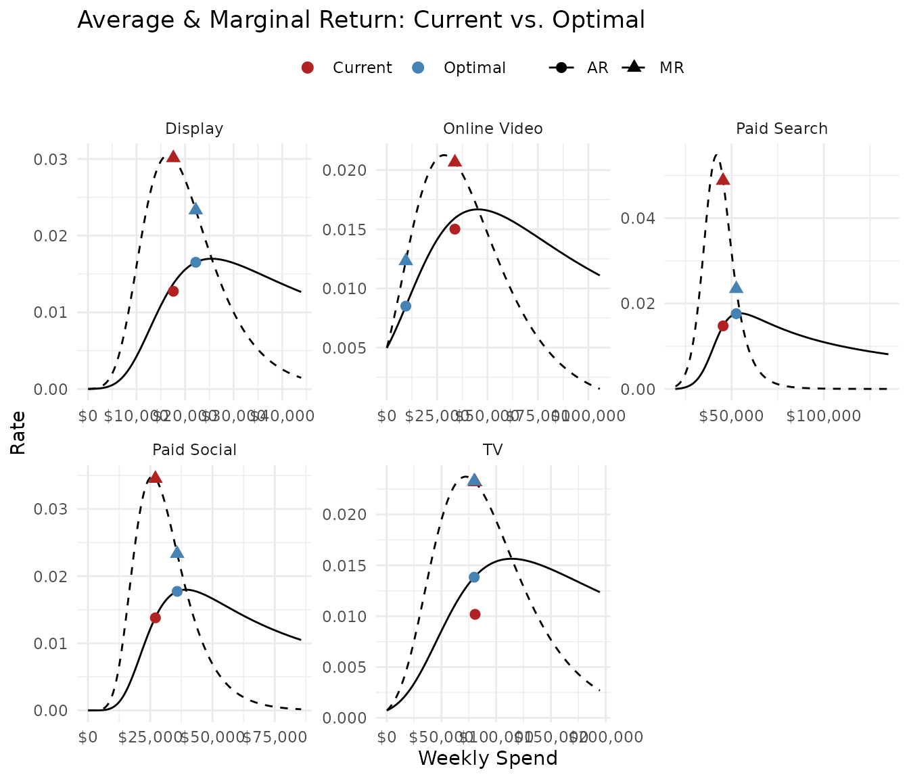
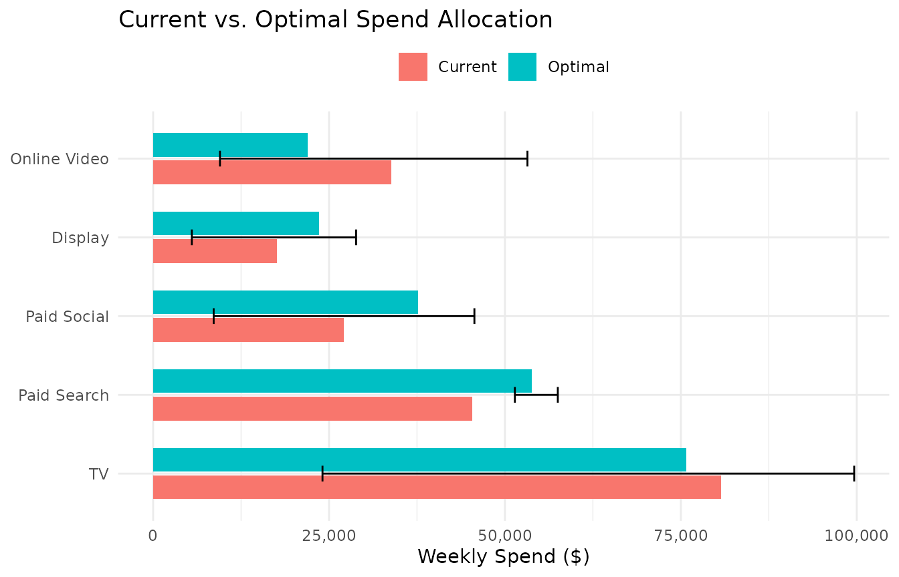
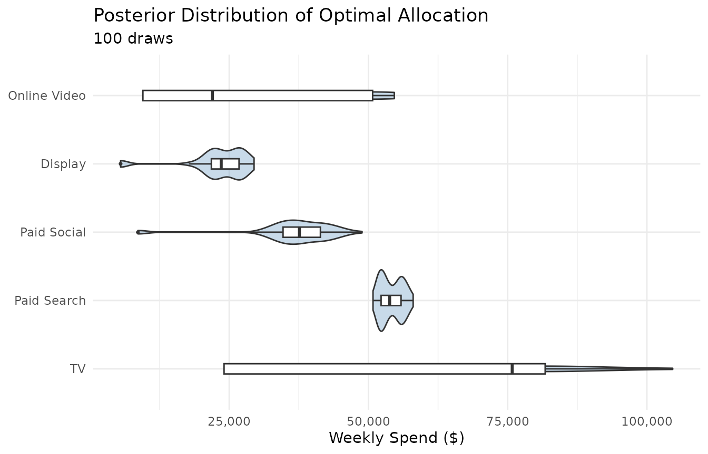

Optimization
optimization.Rmdopt_mix() takes a portfolio of fitted response curves
and finds the spend allocation that achieves a specified objective —
maximizing KPI, hitting a ROI target, or reaching a marginal efficiency
threshold. This vignette covers all five objectives, the constraint
system, point vs. posterior methods, and how to interpret and visualize
results.
Setup: fit the portfolio
We’ll use all five channels from mrmopt_data. In
practice, you should have already run diagnostics on each fit (see Diagnostics & Model
Comparison).
channel_types <- list(
"Paid Search" = "log_logistic",
"Paid Social" = "gompertz",
"Display" = "gompertz",
"Online Video" = "gompertz",
"TV" = "gompertz"
)
fits <- lapply(names(channel_types), function(ch) {
fit_response(
data = mrmopt_data |> filter(channel == ch),
spend = "spend",
kpi = "conversions",
date = "week",
type = channel_types[[ch]],
midpoint_range = c(0.1, 0.5),
ceiling_max = 3,
refresh = 0,
iter = 1000,
chains = 2
)
})
#> conversions ~ c + ((d - c)/(1 + exp(b * (log(spend) - log(e)))))
#> b ~ 1
#> c ~ 1
#> d ~ 1
#> e ~ 1
#> conversions ~ c + (d - c) * exp(-exp(b * (spend - e)))
#> b ~ 1
#> c ~ 1
#> d ~ 1
#> e ~ 1
#> conversions ~ c + (d - c) * exp(-exp(b * (spend - e)))
#> b ~ 1
#> c ~ 1
#> d ~ 1
#> e ~ 1
#> conversions ~ c + (d - c) * exp(-exp(b * (spend - e)))
#> b ~ 1
#> c ~ 1
#> d ~ 1
#> e ~ 1
#> conversions ~ c + (d - c) * exp(-exp(b * (spend - e)))
#> b ~ 1
#> c ~ 1
#> d ~ 1
#> e ~ 1
names(fits) <- names(channel_types)The current total weekly spend across all channels:
current_budget <- sum(sapply(fits, function(f) {
mean(f$data[[f$spend_col]])
}))
cat("Current weekly budget: $", scales::comma(round(current_budget)), "\n")
#> Current weekly budget: $ 3Objective 1: Maximize KPI (fixed budget)
The default objective. Given a total budget, find the allocation that maximizes total predicted KPI:
opt <- opt_mix(fits, budget = 200000)
#>
#> Optimization setup:
#> Channels: 5
#> Method: point
#> Objective: max_kpi
#> Weekly budget: 2e+05
#>
#> Optimization converged (status: 4 )
#> Total weekly KPI: 3,017opt_summary() prints a formatted allocation table:
opt_summary(opt)
#> -- Optimization Result (point) -----------------------------------------------
#> Budget: $200,000/week | Channels: 5
#> -- Optimal Allocation --------------------------------------------------------
#> Channel Weekly Spend Weekly KPI CP Share
#> Paid Social $35,825 661 $54 17.9%
#> Paid Search $52,525 877 $60 26.3%
#> Display $22,195 342 $65 11.1%
#> TV $79,957 1,090 $73 40.0%
#> Online Video $9,498 46 $206 4.7%
#> -- Totals --------------------------------------------------------------------
#> Optimal: Spend $200,000 | KPI 3,017 | Avg CP $66
#> Current: Spend $204,641 | KPI 2,854 | Avg CP $72
#> Change: KPI +5.7% | CP $5opt_table() returns the same information as a tidy
tibble, useful for downstream analysis or reporting:
opt_table(opt) |>
select(channel, current_spend, optimal_spend, spend_delta_pct,
current_kpi, optimal_kpi, kpi_delta_pct)
#> # A tibble: 6 × 7
#> channel current_spend optimal_spend spend_delta_pct current_kpi optimal_kpi
#> <chr> <dbl> <dbl> <dbl> <dbl> <dbl>
#> 1 Paid Soci… 27082 35825. 0.323 401. 661.
#> 2 Paid Sear… 45395. 52525. 0.157 622. 877.
#> 3 Display 17581. 22195. 0.262 217. 342.
#> 4 TV 80753. 79957. -0.00985 1109. 1090.
#> 5 Online Vi… 33829. 9498. -0.719 505. 46.1
#> 6 TOTAL 204641. 200000 -0.0227 2854. 3017.
#> # ℹ 1 more variable: kpi_delta_pct <dbl>Visualizing the result
opt_plot_allocation(opt)
The dumbbell chart shows the magnitude and direction of each reallocation:
opt_plot_comparison(opt)
To see where each channel’s optimal spend falls on its response curve:
opt_plot_curves(opt)
And on the marginal/average return curves — the view that explains why the optimizer moved spend the way it did:
opt_plot_returns(opt)
At the optimum, marginal returns are equalized across channels (within constraint bounds). Channels where the optimal point has higher MR than others are constrained — the optimizer would like to allocate more but is hitting a bound.
Objective 2: Target ROI (flexible budget)
Instead of fixing the budget and maximizing KPI, target a minimum portfolio ROI and let the optimizer find the budget:
opt_roi <- opt_mix(fits, objective = "target_roi", target_roi = 2.0)
#>
#> Optimization setup:
#> Channels: 5
#> Method: point
#> Objective: target_roi >= 2
#>
#> Optimization converged (status: 4 )
#> Discovered weekly budget: 80,200
#> Achieved ROI: 0.005
#> Total weekly KPI: 304
opt_summary(opt_roi)
#> -- Optimization Result (point, target ROI ≥ 2) -------------------------------
#> Optimal budget: $80,200/week | Channels: 5
#> -- Optimal Allocation --------------------------------------------------------
#> Channel Weekly Spend Weekly KPI CP Share
#> Paid Search $13,972 -49 $-283 17.4%
#> Paid Social $20,777 191 $109 25.9%
#> Online Video $9,498 46 $206 11.8%
#> Display $11,884 55 $217 14.8%
#> TV $24,070 62 $390 30.0%
#> -- Totals --------------------------------------------------------------------
#> Optimal: Spend $80,200 | KPI 304 | Avg CP $264
#> Current: Spend $204,641 | KPI 2,854 | Avg CP $72
#> Change: KPI -89.3% | CP +$192
#> Budget Δ: $124,440 (-60.8%)
#> Achieved ROI: 0.005The budget is now an output, not an input:
cat("Weekly budget at target ROI:", scales::dollar(opt_roi$budget_info$weekly_budget), "\n")
#> Weekly budget at target ROI: $80,200.35
cat("Achieved ROI:", round(opt_roi$achieved_roi, 2), "\n")
#> Achieved ROI: 0.01ROI here is defined as total incremental KPI divided by total spend:
where is the floor (baseline KPI at zero spend) for each channel.
Objective 3: Target marginal ROI (per-channel)
Target mROI sets each channel’s spend to where its marginal return equals a threshold. This is a per-channel operation — no cross-channel optimization is needed:
opt_mroi <- opt_mix(fits, objective = "target_mroi", target_mroi = 0.01)
#>
#> Optimization setup:
#> Channels: 5
#> Method: point
#> Objective: target_mroi = 0.01
#>
#> Per-channel mROI root-finding complete.
#> Discovered weekly budget: 333,604
#> Total weekly KPI: 5,268
#> Per-channel achieved mROI:
#> Paid Search: 0.01
#> Paid Social: 0.01
#> Display: 0.01
#> Online Video: 0.01
#> TV: 0.01
opt_summary(opt_mroi)
#> -- Optimization Result (point, target mROI = 0.01) ---------------------------
#> Optimal budget: $333,604/week | Channels: 5
#> -- Optimal Allocation --------------------------------------------------------
#> Channel Weekly Spend Weekly KPI CP Share
#> Paid Social $46,046 825 $56 13.8%
#> Paid Search $58,651 974 $60 17.6%
#> Display $29,972 468 $64 9.0%
#> Online Video $61,313 933 $66 18.4%
#> TV $137,622 2,068 $67 41.3%
#> -- Totals --------------------------------------------------------------------
#> Optimal: Spend $333,604 | KPI 5,268 | Avg CP $63
#> Current: Spend $204,641 | KPI 2,854 | Avg CP $72
#> Change: KPI +84.6% | CP $8
#> Budget Δ: +$128,963 (+63%)
#> Per-channel mROI at solution:
#> Paid Search: 0.01
#> Paid Social: 0.01
#> Display: 0.01
#> Online Video: 0.01
#> TV: 0.01The resulting budget is the sum of per-channel solutions:
cat("Weekly budget at target mROI:", scales::dollar(opt_mroi$budget_info$weekly_budget), "\n")
#> Weekly budget at target mROI: $333,604Target mROI is useful for setting a “minimum efficiency” threshold:
stop investing in a channel when the next dollar generates less than
target_mroi units of KPI.
Objectives 4 & 5: Cost-per-KPI framing
For non-revenue KPIs (leads, visits, sign-ups), thinking in ROI
(KPI/spend) is less natural than cost-per (spend/KPI). The
target_cpk and target_mcpk objectives are
convenience wrappers:
# "Stop spending when each conversion costs more than $100 on average"
opt_cpk <- opt_mix(fits, objective = "target_cpk", target_cpk = 100)
#>
#> Optimization setup:
#> Channels: 5
#> Method: point
#> Objective: target_cpk <= $100
#>
#> Optimization converged (status: 4 )
#> Discovered weekly budget: 625,062
#> Achieved ROI: 0.01
#> Total weekly KPI: 6,152
opt_summary(opt_cpk)
#> -- Optimization Result (point, target CPK ≤ $100) ----------------------------
#> Optimal budget: $625,062/week | Channels: 5
#> -- Optimal Allocation --------------------------------------------------------
#> Channel Weekly Spend Weekly KPI CP Share
#> Paid Search $84,209 1,045 $81 13.5%
#> Paid Social $78,427 922 $85 12.5%
#> Display $53,335 538 $99 8.5%
#> TV $273,140 2,483 $110 43.7%
#> Online Video $135,950 1,163 $117 21.7%
#> -- Totals --------------------------------------------------------------------
#> Optimal: Spend $625,062 | KPI 6,152 | Avg CP $102
#> Current: Spend $204,641 | KPI 2,854 | Avg CP $72
#> Change: KPI +115.6% | CP +$30
#> Budget Δ: +$420,421 (+205.4%)
#> Achieved CPK: $100
# "Stop spending when the next conversion costs more than $150"
opt_mcpk <- opt_mix(fits, objective = "target_mcpk", target_mcpk = 150)
#>
#> Optimization setup:
#> Channels: 5
#> Method: point
#> Objective: target_mcpk <= $150
#>
#> Per-channel mROI root-finding complete.
#> Discovered weekly budget: 372,869
#> Total weekly KPI: 5,592
#> Per-channel achieved mROI:
#> Paid Search: 0.006667
#> Paid Social: 0.006667
#> Display: 0.006667
#> Online Video: 0.006667
#> TV: 0.006667
opt_summary(opt_mcpk)
#> -- Optimization Result (point, target mCPK ≤ $150) ---------------------------
#> Optimal budget: $372,869/week | Channels: 5
#> -- Optimal Allocation --------------------------------------------------------
#> Channel Weekly Spend Weekly KPI CP Share
#> Paid Social $50,312 860 $59 13.5%
#> Paid Search $61,514 998 $62 16.5%
#> Display $33,086 493 $67 8.9%
#> TV $156,223 2,222 $70 41.9%
#> Online Video $71,735 1,019 $70 19.2%
#> -- Totals --------------------------------------------------------------------
#> Optimal: Spend $372,869 | KPI 5,592 | Avg CP $67
#> Current: Spend $204,641 | KPI 2,854 | Avg CP $72
#> Change: KPI +96% | CP $5
#> Budget Δ: +$168,229 (+82.2%)
#> Per-channel marginal CPK at solution:
#> Paid Search: $150
#> Paid Social: $150
#> Display: $150
#> Online Video: $150
#> TV: $150Internally, target_cpk converts to
target_roi = 1 / target_cpk and target_mcpk
converts to target_mroi = 1 / target_mcpk.
Point vs. posterior optimization
All objectives support two methods:
Point estimate (default)
Uses the posterior median parameters for each channel. Fast (< 1 second) and produces a single optimal allocation. Good for quick scenario analysis:
opt_point <- opt_mix(fits, budget = 200000, method = "point")
#>
#> Optimization setup:
#> Channels: 5
#> Method: point
#> Objective: max_kpi
#> Weekly budget: 2e+05
#>
#> Optimization converged (status: 4 )
#> Total weekly KPI: 3,017Posterior
Runs the optimizer over n_draws posterior draws,
producing a distribution of optimal allocations that reflects
parameter uncertainty:
opt_post <- opt_mix(fits, budget = 200000, method = "posterior", n_draws = 100)
#>
#> Optimization setup:
#> Channels: 5
#> Method: posterior
#> Objective: max_kpi
#> Weekly budget: 2e+05
#>
#> Optimizing across 100 posterior draws...
#> | | | 0% | |= | 1% | |= | 2% | |== | 3% | |=== | 4% | |==== | 5% | |==== | 6% | |===== | 7% | |====== | 8% | |====== | 9% | |======= | 10% | |======== | 11% | |======== | 12% | |========= | 13% | |========== | 14% | |========== | 15% | |=========== | 16% | |============ | 17% | |============= | 18% | |============= | 19% | |============== | 20% | |=============== | 21% | |=============== | 22% | |================ | 23% | |================= | 24% | |================== | 25% | |================== | 26% | |=================== | 27% | |==================== | 28% | |==================== | 29% | |===================== | 30% | |====================== | 31% | |====================== | 32% | |======================= | 33% | |======================== | 34% | |======================== | 35% | |========================= | 36% | |========================== | 37% | |=========================== | 38% | |=========================== | 39% | |============================ | 40% | |============================= | 41% | |============================= | 42% | |============================== | 43% | |=============================== | 44% | |================================ | 45% | |================================ | 46% | |================================= | 47% | |================================== | 48% | |================================== | 49% | |=================================== | 50% | |==================================== | 51% | |==================================== | 52% | |===================================== | 53% | |====================================== | 54% | |====================================== | 55% | |======================================= | 56% | |======================================== | 57% | |========================================= | 58% | |========================================= | 59% | |========================================== | 60% | |=========================================== | 61% | |=========================================== | 62% | |============================================ | 63% | |============================================= | 64% | |============================================== | 65% | |============================================== | 66% | |=============================================== | 67% | |================================================ | 68% | |================================================ | 69% | |================================================= | 70% | |================================================== | 71% | |================================================== | 72% | |=================================================== | 73% | |==================================================== | 74% | |==================================================== | 75% | |===================================================== | 76% | |====================================================== | 77% | |======================================================= | 78% | |======================================================= | 79% | |======================================================== | 80% | |========================================================= | 81% | |========================================================= | 82% | |========================================================== | 83% | |=========================================================== | 84% | |============================================================ | 85% | |============================================================ | 86% | |============================================================= | 87% | |============================================================== | 88% | |============================================================== | 89% | |=============================================================== | 90% | |================================================================ | 91% | |================================================================ | 92% | |================================================================= | 93% | |================================================================== | 94% | |================================================================== | 95% | |=================================================================== | 96% | |==================================================================== | 97% | |===================================================================== | 98% | |===================================================================== | 99% | |======================================================================| 100%
#>
#> Posterior optimization complete.
#> Median total weekly KPI: 3,305
opt_summary(opt_post)
#> -- Optimization Result (posterior, 100 draws) --------------------------------
#> Budget: $200,000/week | Channels: 5
#> -- Optimal Allocation --------------------------------------------------------
#> Channel Weekly Spend [95% CI] CP Share
#> Paid Social $37,606 [$8,603 – $45,659] $55 +17.7%
#> Paid Search $53,812 [$51,411 – $57,515] $59 +25.3%
#> Online Video $21,988 [$9,498 – $53,197] $61 +10.3%
#> Display $23,564 [$5,495 – $28,847] $61 +11.1%
#> TV $75,815 [$24,070 – $99,635] $78 +35.6%
#> -- Totals --------------------------------------------------------------------
#> Optimal: Spend $212,785 | KPI 3,305 | Avg CP $64
#> Current: Spend $204,641 | KPI 2,854 | Avg CP $72
#> Change: KPI +15.8% | CP $7The [95% CI] column shows the range of optimal spend
across draws. Posterior allocation plots include error bars:
opt_plot_allocation(opt_post)
opt_plot_posterior() shows the full spend distribution
per channel:
opt_plot_posterior(opt_post)
When to use posterior: When the allocation decision matters and you want to understand how sensitive it is to parameter uncertainty. Wide distributions signal channels where the data doesn’t strongly constrain the optimal spend.
When point is sufficient: Scenario analysis, quick comparisons, or when all channels have tight credible bands.
Period budgets
By default, opt_mix() optimizes a single-week budget. To
optimize an annual or quarterly budget broken into weekly allocations,
use n_weeks:
opt_annual <- opt_mix(fits, budget = 10000000, n_weeks = 52)
#>
#> Optimization setup:
#> Channels: 5
#> Method: point
#> Objective: max_kpi
#> Weekly budget: 192,308
#> Period budget: 1e+07 ( 52 weeks)
#>
#> Optimization converged (status: 4 )
#> Total weekly KPI: 2,836
#> Total period KPI: 147,452
opt_summary(opt_annual)
#> -- Optimization Result (point) -----------------------------------------------
#> Budget: $192,308/week | $10,000,000 over 52 weeks | Channels: 5
#> -- Optimal Allocation --------------------------------------------------------
#> Channel Weekly Spend Weekly KPI CP Share
#> Paid Social $35,552 654 $54 18.5%
#> Paid Search $52,382 874 $60 27.2%
#> Display $21,969 337 $65 11.4%
#> TV $72,908 924 $79 37.9%
#> Online Video $9,498 46 $206 4.9%
#> -- Totals --------------------------------------------------------------------
#> Optimal: Spend $192,308 | KPI 2,836 | Avg CP $68
#> Current: Spend $204,641 | KPI 2,854 | Avg CP $72
#> Change: KPI -0.6% | CP $4
#>
#> Period (52 weeks): $10,000,000 spend | 147,452 KPIThe optimizer finds the optimal weekly allocation, then
scales to the period. The $solution tibble contains both
weekly and period columns.
Constraints
Auto-generated (default)
When no constraints argument is provided,
opt_mix() generates bounds automatically from each
channel’s fitted return rate ranges, scaled by
bounds_multiplier (default 3). This prevents the optimizer
from extrapolating far beyond observed spend levels.
User-supplied constraints
Pass a data frame with channel-level bounds:
my_constraints <- data.frame(
channel = names(fits),
min_spend = c(10000, 5000, 2000, 5000, 50000),
max_spend = c(100000, 80000, 30000, 60000, 150000)
)
opt_constrained <- opt_mix(fits, budget = 200000, constraints = my_constraints)
#>
#> Optimization setup:
#> Channels: 5
#> Method: point
#> Objective: max_kpi
#> Weekly budget: 2e+05
#>
#> Optimization converged (status: 4 )
#> Total weekly KPI: 3,073
opt_summary(opt_constrained)
#> -- Optimization Result (point) -----------------------------------------------
#> Budget: $200,000/week | Channels: 5
#> -- Optimal Allocation --------------------------------------------------------
#> Channel Weekly Spend Weekly KPI CP Share
#> Online Video $5,000 -1 $-4,749 2.5%
#> Paid Social $36,132 668 $54 18.1%
#> Paid Search $52,688 881 $60 26.3%
#> Display $22,447 348 $65 11.2%
#> TV $83,732 1,177 $71 41.9%
#> -- Totals --------------------------------------------------------------------
#> Optimal: Spend $200,000 | KPI 3,073 | Avg CP $65
#> Current: Spend $204,641 | KPI 2,854 | Avg CP $72
#> Change: KPI +7.7% | CP $7Share-based constraints
For max_kpi (fixed budget) optimization, you can also
set minimum and maximum share-of-budget bounds. When both absolute and
share constraints are present, the tighter bound wins:
share_constraints <- data.frame(
channel = names(fits),
min_spend = c(10000, 5000, 2000, 5000, 50000),
max_spend = c(100000, 80000, 30000, 60000, 150000),
min_share = c(0.05, 0.03, 0.01, 0.03, 0.20),
max_share = c(0.50, 0.40, 0.15, 0.30, 0.60)
)
opt_shares <- opt_mix(fits, budget = 200000, constraints = share_constraints)
#>
#> Optimization setup:
#> Channels: 5
#> Method: point
#> Objective: max_kpi
#> Weekly budget: 2e+05
#>
#> Optimization converged (status: 4 )
#> Total weekly KPI: 3,122
opt_summary(opt_shares)
#> -- Optimization Result (point) -----------------------------------------------
#> Budget: $200,000/week | Channels: 5
#> -- Optimal Allocation --------------------------------------------------------
#> Channel Weekly Spend Weekly KPI CP Share
#> Display $2,000 -24 $-82 1.0%
#> Paid Social $38,319 714 $54 19.2%
#> Paid Search $53,896 907 $59 26.9%
#> TV $99,785 1,518 $66 49.9%
#> Online Video $6,000 8 $751 3.0%
#> -- Totals --------------------------------------------------------------------
#> Optimal: Spend $200,000 | KPI 3,122 | Avg CP $64
#> Current: Spend $204,641 | KPI 2,854 | Avg CP $72
#> Change: KPI +9.4% | CP $8Share-based constraints are only supported for max_kpi
(fixed budget). They are warned about and stripped for flexible-budget
objectives, since there is no fixed budget to compute shares
against.
Fixed channels
Lock a channel at its current spend with the fixed
column:
fixed_constraints <- data.frame(
channel = names(fits),
min_spend = c(10000, 5000, 2000, 5000, 50000),
max_spend = c(100000, 80000, 30000, 60000, 150000),
fixed = c(FALSE, FALSE, FALSE, FALSE, TRUE)
)
opt_fixed <- opt_mix(fits, budget = 200000, constraints = fixed_constraints)
#>
#> Optimization setup:
#> Channels: 5
#> Method: point
#> Objective: max_kpi
#> Weekly budget: 2e+05
#>
#> Optimization converged (status: 4 )
#> Total weekly KPI: 2,918
opt_summary(opt_fixed)
#> -- Optimization Result (point) -----------------------------------------------
#> Budget: $200,000/week | Channels: 5
#> -- Optimal Allocation --------------------------------------------------------
#> Channel Weekly Spend Weekly KPI CP Share
#> Paid Social $37,693 702 $54 18.8%
#> Paid Search $53,542 900 $60 26.8%
#> Display $23,694 375 $63 11.8%
#> Online Video $35,070 530 $66 17.5%
#> TV $50,000 412 $121 25.0%
#> -- Totals --------------------------------------------------------------------
#> Optimal: Spend $200,000 | KPI 2,918 | Avg CP $69
#> Current: Spend $204,641 | KPI 2,854 | Avg CP $72
#> Change: KPI +2.2% | CP $3When fixed = TRUE, the channel’s spend is locked at
min_spend and the remaining budget is optimized across the
other channels.
Interpreting the solution
The solution tibble
The core output is opt$solution, a tibble with one row
per channel:
names(opt$solution)
#> [1] "channel" "current_weekly_spend" "current_weekly_units"
#> [4] "current_weekly_kpi" "current_cost_per" "current_rr"
#> [7] "current_spend_share" "current_kpi_share" "weekly_spend"
#> [10] "weekly_spend_lower" "weekly_spend_upper" "weekly_kpi"
#> [13] "weekly_kpi_lower" "weekly_kpi_upper" "weekly_units"
#> [16] "weekly_units_lower" "weekly_units_upper" "cost_per"
#> [19] "rr" "period_spend" "period_kpi"
#> [22] "period_units" "spend_share" "kpi_share"Key column groups:
-
Current state (
current_weekly_*): Where each channel sits now (from the fitted model’s data) -
Optimal state (
weekly_*): The optimizer’s recommended allocation. For posterior results, includes_lowerand_upperCI columns. -
Period totals (
period_*): Weekly values ×n_weeks -
Shares (
spend_share,kpi_share): Fraction of total budget and total KPI
Where to go next
| Topic | Vignette |
|---|---|
| Diagnostics to verify fits before optimizing | Diagnostics & Model Comparison |
| Tuning priors when fits look wrong | Priors & Model Tuning |
| Hierarchical models for sub-channel optimization | Hierarchical Models |